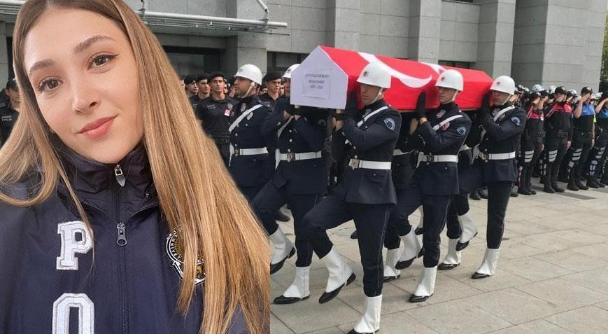

Ümraniye'de polis memuru Şeyda Yılmaz'ı şehit eden 19 yaşındaki saldırgan suç makinesi çıktı
<Olay, saat 22.55 sıralarında Ümraniye Ihlamurkuyu Mahallesi Petrol Yolu Caddesi üzerinde meydana geldi. Ümraniye ilçe Emniyet Müdürlüğü Dudullu Polis Merkezi Amirliği tarafından "motosiklet hırsızlığı" suçundan yakalanan ve sonrasında firar eden şüphelinin yakalanmasına yönelik operasyon düzenlendi. Çeşitli suçlardan 26 adet suç kaydı bulunan Yunus Emre Geçit (19) Ihlamurkuyu Mahallesi'nde ekipler tarafından yakalandı. Geçit, bu sırada polise direndi. Yaşanan arbedede polisin silahını alan saldırgan, polislere ve çevredeki vatandaşlara ateş açtı. Yunus Emre Geçit'in açtığı ateş sonucu polis memuru Şeyda Yılmaz şehit oldu; polis memuru Kürşat Hakkı Sarıtepe ile şüphelinin annesi P.G. (43) yaralandı. Yaralılar sağlık ekipleri tarafından hastaneye kaldırılarak tedavi altına alındı.
POLİS MEMURU HASTANEDE ŞEHİT OLDU
Şüphelinin açtığı ateş sonucu yaralanan polis memuru Şeyda Yılmaz (27) hastanede yapılan tüm müdahalelere rağmen şehit oldu. Diğer yaralıların tedavisi sürerken, saldırıdan sonra kaçan şüpheli ise polisin yaptığı çalışmaların ardından sokak arasında kısa sürede yakalanarak gözaltına alındı. Adrese gelen çok sayıda polis ise çevrede güvenlik önlemi alarak inceleme yaptı. Olay yerindeki boş kovanlar tek tek belirlenerek incelendi.
26 SUÇ KAYDI
19 yaşındaki Yunus Emre Geçit'in daha önceden pek çok suç kaydı olduğu ortaya çıktı. Geçit'in 'Kasten yaralama', 'Gasp' 'Cinsel Taciz', 'Yağma', 'Mala zarar verme' gibi suçlardan poliste 26 kaydı olduğu öğrenildi.
SALDIRGANIN ATEŞ ETTİĞİ ANLAR KAMERADA
Saldırı anı güvenlik ve cep telefonu kamerası görüntülerine yansıdı. Görüntülerde polisin şüpheliyi etkisiz hale getirmeye çalıştığı görülürken, bu sırada şüphelinin polisin silahını alarak ateş açtığı ve polisin de anında karşılık verdiği anlar yer aldı. Şüpheli ateş açarak kaçarken, yaralanan polisin yanına ise diğer arkadaşları koşarak geldi. Polisin olayla ilgili incelemesi sürüyor. Başka bir açıdan çekilen cep telefonu kamerasına yansıyan görüntülerde ise, saldırganın elindeki silahla ateş ettiği anlar görülüyor. Art arda ateş eden saldırgan daha sonra kaçarak olay yerinden uzaklaşıyor.
